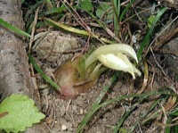

みょうが（茗荷）の生産量
いちばん多くとれる都道府県
みょうがが日本でいちばん多くとれるのは高知県です。4,610 tで、全国（4,860 t）の95%を占めます。

| 順位 | 都道府県 | 収穫量 | 全国に占める割合 |
|---|---|---|---|
| 1位 | 高知県 | 4,610 t | 95% |
| 2位 | 秋田県 | 56 t | 1.2% |
| 3位 | 群馬県 | 54 t | 1.1% |
この数字について
- 分類：ショウガ科
- 全国の収穫量：4,860 t
- この数字が表すもの：収穫量（畑や田でとれた重さ）
- 調査：地域特産野菜生産状況調査 令和4年産
- 19県分を調査（調査していない県は順位に入りません）